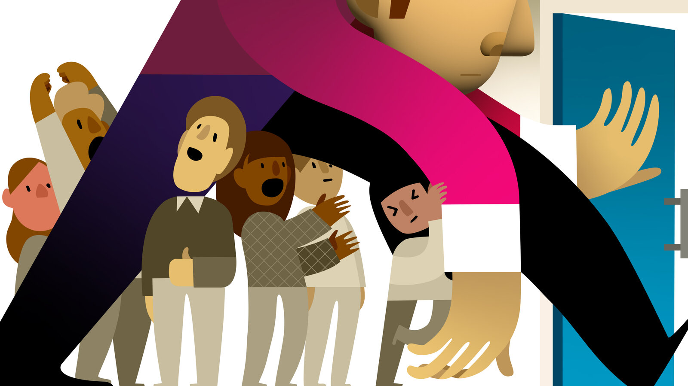

Everyday Hacking Stories
Everyday hacking stories are common because many individuals are simply unaware of the dangers lurking online. We trust emails, social media links, and even seemingly legitimate websites, often overlooking red flags. The hacker's goal is to manipulate the human aspect—tricking someone into making a mistake. Most people don’t think they’re valuable targets, and this complacency can lead to easily preventable breaches. In reality, even the most ordinary person can be a victim, and hackers are counting on this vulnerability.
One of the main tactics used in everyday hacking is phishing. These attacks often look like official communication, making people feel safe. In fact, phishing is one of the most common ways hackers gain unauthorized access to accounts, as it preys on human error rather than system flaws. People often don't realize how sophisticated phishing scams have become, making them feel like they’re truly communicating with their bank, online services, or even their friends. This false sense of security opens the door for hackers to exploit.
Many victims of hacking report feeling violated, shocked, and often ashamed. After a hack, they may struggle with feelings of loss—whether it's financial or emotional. The truth is, many hackers target emotions like urgency, fear, or the desire for convenience. Hackers know how to prey on those emotions to elicit fast, impulsive actions. This is why so many "everyday hacking stories" involve victims who acted quickly without fully thinking through the consequences of their actions, such as clicking on a malicious link or entering personal information on a fake site.
One of the biggest reasons everyday hacking stories happen is because many people aren’t taking the necessary precautions to protect their online presence. From not using strong, unique passwords to neglecting multi-factor authentication, users are leaving their personal data exposed. Hackers know this, and they exploit these common oversights. In today's digital age, securing your online presence should be as routine as locking your front door, but far too many people don’t take these basic steps seriously.
Another reason everyday hacking stories are becoming more prevalent is because of the increasing complexity of attacks. Hackers no longer rely on just simple methods like brute force; they use advanced tactics such as social engineering, malware, and even AI-driven tools to break into accounts. These tools are designed to make it harder for users to detect when something is wrong. With so many sophisticated methods at their disposal, hackers can easily target even the most cautious individuals.
Ultimately, the rise of everyday hacking stories comes down to awareness. The more people know about the risks and how hackers operate, the better they can protect themselves. This is why educating the public about online security is crucial. While technology will continue to evolve and hackers will adapt, the most effective defense remains vigilance. By learning about common hacking methods, recognizing red flags, and practicing good security hygiene, people can avoid becoming the next victim in an everyday hacking story.
Stories like Ashish's show how hackers exploit trust and familiarity. Many people assume that emails or messages from familiar sources are safe, but hackers often mimic trusted institutions or contacts to lower their targets’ defenses. This reliance on human trust is why social engineering remains one of the most effective tools in a hacker’s arsenal. It reminds us that online security isn't just about technical defenses—it’s also about critical thinking and vigilance.
Another insight from Ashish’s experience is how a single compromised account can trigger a ripple effect. Once a hacker gains access, they often use that account to reach more victims—friends, family, or colleagues. This “chain hacking” tactic works because people trust messages from someone they know. It emphasizes the need to warn contacts immediately after discovering a hack and to change passwords everywhere the same login might be used.
Ashish’s situation also highlights how attackers prey on urgency and fear. Hackers often craft messages that create a sense of panic—claiming your account is at risk or your data will be lost. This emotional manipulation is designed to push you into acting quickly, without verifying the request. The key lesson here is to pause and assess before taking action, especially if a message pressures you to act immediately.
Finally, the story underscores the importance of proactive security measures. Multi-factor authentication, strong and unique passwords, and staying updated on phishing tactics are simple steps that can prevent many breaches. Ashish’s experience is a reminder that while we can't eliminate all risks, we can significantly reduce them with better habits and a cautious mindset.